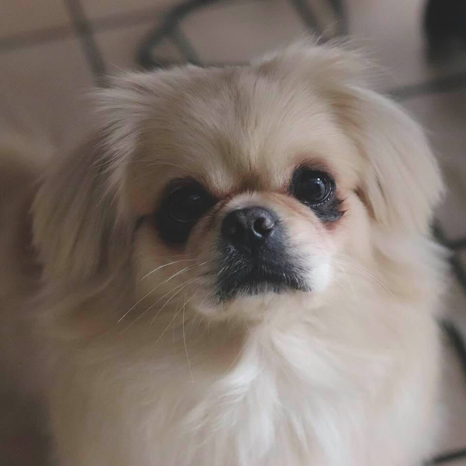
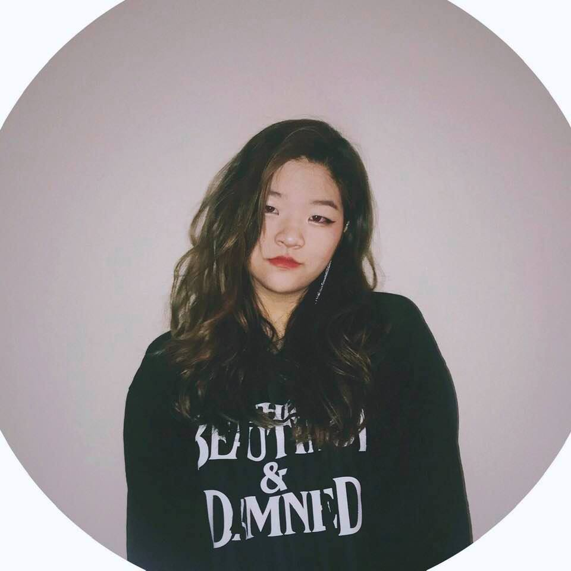

Home || More Info
Who am I?
My full name is Joo An Rim Kim but you can just call me Joo. I have two last names because I was born in Santiago, Chile; where it is customary to add the maternal last name behind the paternal. It was around October of 2002 when I moved to America to the humble bordertown, Laredo, Texas. Although I am currently in The University of Texas at Austin's College of Natural Sciences, I have decided that I would much rather enjoy pursuing an Advertising degree. My hobbies include learning about astrology, playing my ukulele, and going to concerts of all types.
 My Work Experience
- Kinsolving Dormitory - Student Assistant - (2019 - Present)
- Siete - Temporary Intern - (Summer 2018)
- South Texas Tutoring Center - Tutor - (2016 - 2017)
- General Imports - Cashier - (2014 - 2016)
Favorite links to websites I frequent
- "10 Basic Safety Tips for Women"
- When I Want to Indulge ( 〃．．)
- If you're into astrology (≖ᴗ≖✿)...here's my natal chart!
Contact me via links below
clint.tuttle@mccombs.utexas.edu@ClintTuttle
My Linked In Profile
Activities
Part-time Musician for Southwestern Diabetic Foundation, Volunteer at Rosies Place and Big Apple Circus, McCombs School of Business Steering Committee, Former Music Minister at St Ann Parish Youth Program, Former Director and Counselor for Camp Reynal (camp for juvenile renal disorders)
Additional Information
Proficient in SAP and Oracle Retail software suites. Skilled in SQL, PHP, Visual Basic, Excel macros, building tools in MS Access/Excel, UNIX, data analysis/management, software testing methodology, and entire Project Management Lifecycle. Started own business at the age of sixteen. Eagle Scout Award recipient. Interests include: playing guitar, practicing Spanish with my Paraguayan mutt named Lady, travel, volunteering, and exercising.